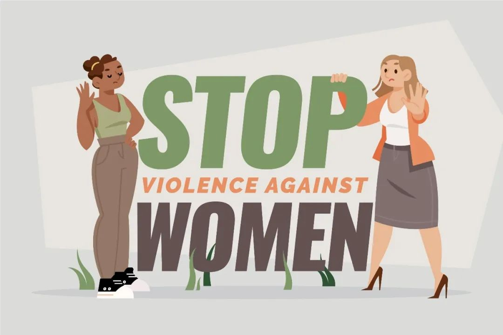
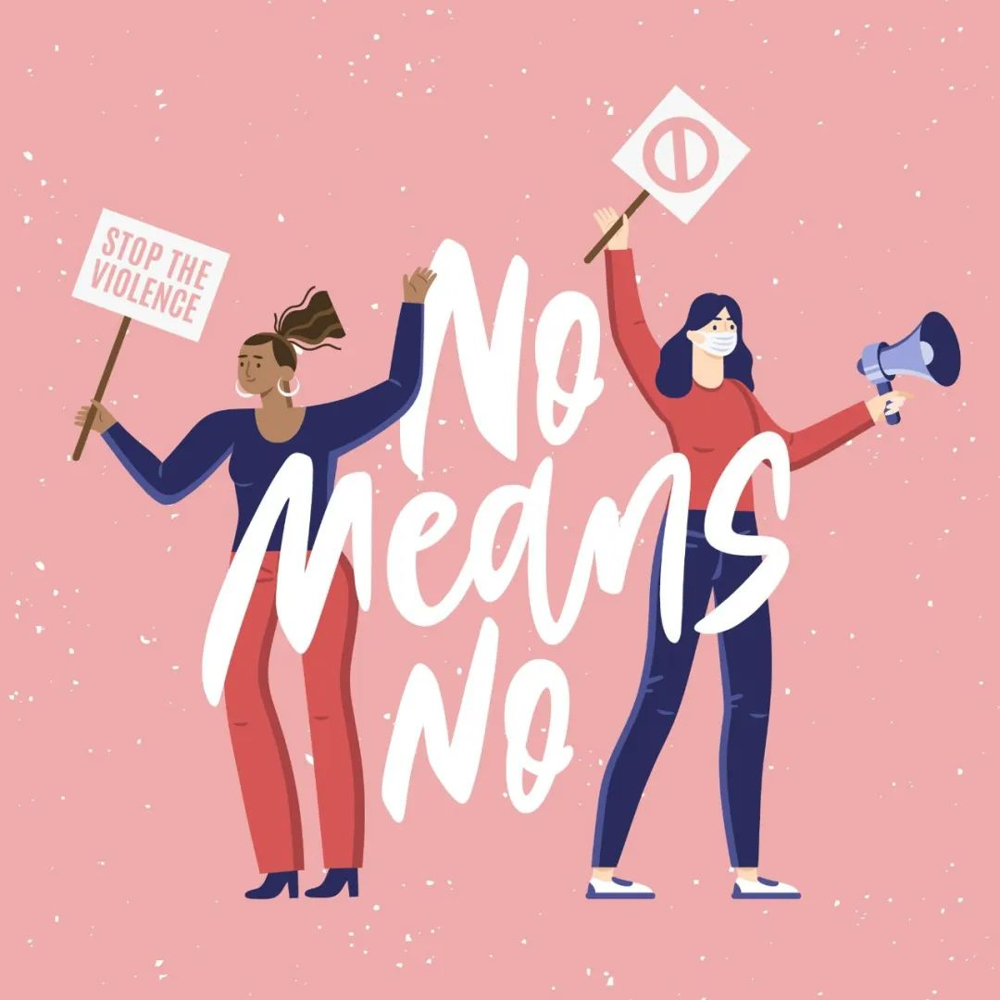
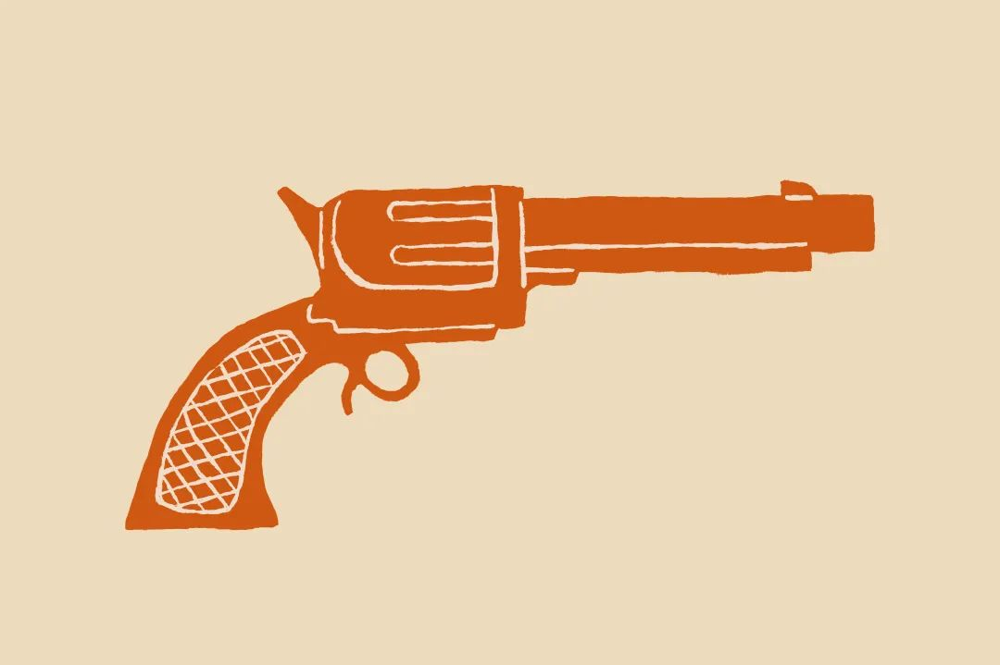
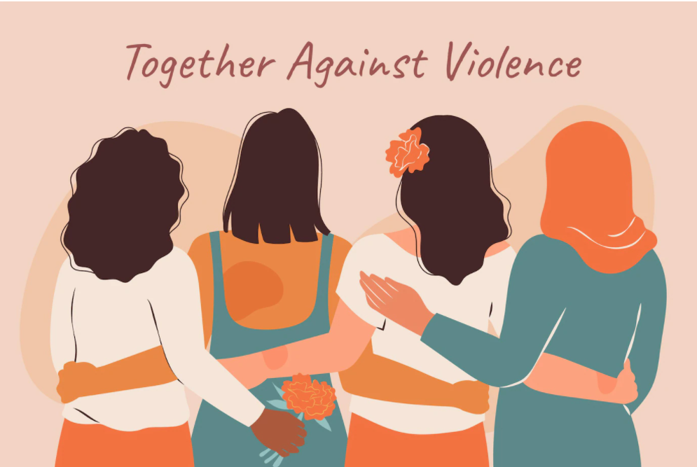

As an effective means of resisting domestic violence, the term “self-defense” often appears in the victim’s defense and the judicial court. But when violence strikes, blind self-defense could turn the victim to be the criminal, getting the vulnerable groups into the mire. Therefore, before protecting ourselves from harm, we should all know how to walk a fine line on bravery and what is the bottom line of protection, so that “self-defense” can exert its maximum effectiveness within the law.
1. Defense Conditions of Self-defense

On March 28, 1992, a woman shot and killed her partner, Albert Hampton, at their home in California, USA. When the local police officers arrived, she immediately surrendered and confessed to the police where the gun was, and admitted that she shot her partner. She explained, “He deserves it. I can’t take it anymore, I told him not to hit me again!” During the trial, the defendant was charged with private use of a firearm for murder. The defense claimed that the defendant shot Hampton in self-defense, and provided the defendant’s expert testimony on the “battered woman syndrome.” Battered woman syndrome (BWS) is a pattern of signs and symptoms displayed by a woman who has suffered persistent intimate partner violence: whether psychological, physical, or sexual, from her male partner Lenore Walker published The Battered Woman Syndrome in 1984, and proposed two theories of “Learned Helplessness” and “The Cycle of Abuse” to explain the psychological changes of patients with battered woman syndrome. The case in 1987, R. v. Lavallee, [1990] 1 S.C.R. 852, was the first case to BWS as admissible evidence. After years of development, BWS has become the basis of legal defense for women who have suffered domestic violence in a psychological and medical concept. However, in the shooting of Hampton, the judge claimed battered woman syndrome cannot be used to determine the necessity and urgency of the defendant’s killing. Battered woman syndrome is often not accepted as legal defense evidence in practice due to gender bias in self-defense and disputes over the identification conditions. A jury found the defendant guilty of intentional homicide with a personal firearm and sentenced her to eight years in prison. In a subsequent appeal, the Supreme Court overturned that decision and said that the testimony presented by the defendant provided a plausible cause of perfect self-defense for all charges.2. Grey areas of legal decisions

The degree and motive of self-defense vary from state to state, and relevant verdict laws include “Duty to retreat,” “Stand-your-ground law,” and “Castle Doctrine.” These laws largely point to the generally accepted principle that individuals can protect themselves from harm in appropriate circumstances, even if such conduct usually constitutes a crime. This makes the United States one of the strongest protectors of the lawful right of self-defense. (States that adopts abovementioned verdict laws: https://scharfflawfirm.com/self-defense-laws-u-s/) However, it gets complicated when such laws that appear to favor self-defense are related to domestic violence. “Duty to retreat” is also known as “Requirement of safe retreat.” While most states have abolished this principle in cases involving the use of non-lethal forces, some states still require a person to make an attempt to avoid the attempt of confrontation before lethal forces being applied. Nicole Addimando, who had long faced horrific physical and sexual abuse from her husband, was found guilty of second-degree murder and second-degree criminal possession of a handgun in 2017 after she shot and killed her husband when he again threatened her with a gun in Poughkeepsie, New York. Nicole’s failure to defend her self-defense has a lot to do with the “Duty to retreat.” But how can a woman who has been abused for a long time make sure that when her husband is threatening her with death, she will stay calm and walk back to the corner and repeatedly warn him that she is going to shoot him?” The “Duty to retreat” clearly contradicts the original purpose of self-defense. Therefore, in contrast to the “Duty to retreat,” many U.S. states have established “Stand-your-ground law,” which allows the victim to confront the aggressor directly. A similar “Castle Doctrine” allows victims to defend themselves against intruders with deadly forces in their “personal territory,” including their cars, homes, and workplaces. For years, defenders of “Stand-your-ground law” and other efforts to expand gun rights have invoked female victims in their defense, and it has been common for women to shoot rapists as a reason for broader gun rights. “Calls to repeal ‘stand-your-ground’ are anti-women,” wrote one Florida lawmaker. But is the “Stand-your-ground” law a universal guarantee for all women? That does not seem to be the case. Marissa Alexander, a black woman living in Florida, shot her abusive husband. She filed a “Stand-your-ground law” immunity hearing, which was denied, and she will face 60 years in prison if the charges have not been withdrawn. Data surveys point to the same results: “Stand-your-ground law” does not seem to protect women of color – the data finds that among the cases of the murders of adult men by women nationwide, killings of black men by white women were the most likely to be justified, accounting for 13.5 percent of the cases; By contrast, 2.6 percent of white women killed white men, and only 5.7 percent of non-white women who killed black men are considered sufficient for self-defense – the disputes over race and class speak for themselves.3. Guns and empowering self-defense

In the United States, violence in intimate relationships emerges endlessly, threatening the safety and dignity of American women. According to US's National Intimate Partner and Sexual Violence Survey (NISVS)in 2010, nearly 20 people are physically abused by their intimate partners every minute. One-third of women reported having experienced physical violence of some kind from their intimate relationships. To protect themselves from violence, these women employed various strategies to resist.。 In 2007, US women's choices of strategies to protect themselves from violencerevealed that behavioral strategies were among the most prevalent forms of protection. Among them, "being vigilant about the surrounding environment" (99%) and "locking the door at home" (96%) were the most common. Of all the behavioral strategies, martial arts and self‐defense training (19%) were women's least standard protection methods. In response to a question about whether they ever "avoided or changed doing things they wanted to do to protect themselves from violence," more than 70% of all women responded affirmatively. It is also worth noting that, except for firearms, the other strategies are all available options for women in most developed countries. Compared with those with no victimization experiences, those with both personal and vicarious experience were likelier to have guns (OR = 1.58) and carry weapons (OR = 2.67). However, in addition to being a self-defense weapon against violence, guns are also seen as a tool for perpetrators to exert power, control, and abuse over victims, imposing additional risk of firearm homicide and suicide of women. According to Nonfatal Gun Use in Intimate Partner Violence: A Systematic Review of the Literature, in 2016, about 4.5 million have had an intimate partner threaten them with a gun, and nearly 1 million have been shot or shot at by an intimate partner. Under the growing threat from firearms, empowerment self-defense has been proven effective in reducing violence. The courses were established in 2003 by El HaLev, an Israeli non-profit organization dedicated to helping women with mental trauma after abuse and other vulnerable populations. Empowering self-defense courses include easy martial arts programs and a series of comprehensive strategies that confer verbal, awareness-awakening, and confidence-building skills. In addition, researchers who study self-defense for sexual assault note its similarities to exposure therapy, in which individuals in a safe environment are exposed to the things they fear and avoid. In the case of self-defense training, however, participants are not only exposed to simulated assaults, but they also learn and practice proactive responses. Over time, these repeated simulations can massively transform old memories of assault into new memories of empowerment, explains Jim Hopper, a psychologist and teaching associate at Harvard Medical School. Research indicates that self-defense training can enable women to cope with the threat of sexual/physical violence by providing a sense of mastery and personal control over their safety.
4. How to conduct effective self-defense
May one day, self-defense is no longer a risky act or the last resort. Those roars and fists will be put to justice and stigmatized under the law, and the victims will win the ultimate victory in front of the trial bench.
References ✦ ✦ ✦ ✦ ✦ ✦ ✦ ✦ Lenore Walker, The Battered Woman Syndrome, 1984 National Intimate Partner and Sexual Violence Survey, 2010 US women's choices of strategies to protect themselves from violence, 2007 Nonfatal Gun Use in Intimate Partner Violence: A Systematic Review of Literature, 2016 Self-defense Law in the US, Sharff Law Firm, https://scharfflawfirm.com/self-defense-laws-u-s/ ✦ ✦✦ ✦✦ ✦✦ ✦ --- - Author: 潘诗雨，汤欣然，范珊玛，Erin - Correct：Jane - Revisers: 秦科、符芬菊 - Legal Counsel：崔泽森 - Layout & Cover：园园 - Translators: Remy Xie, Jiayu Gui, Wenqin Yu, Chenyu Shen - Proofreader: Natasha Gambanjera